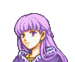

終章Beyond the Darkness
オープニング1
(全員初期配置につく)
(BGM イドゥンのテーマ)
(ロイたちがイドゥンに向かい前進)
・・・・・・.........

あなたが 『暗闇の巫女』
いや 『魔竜』・・・You're the "Priestess of Darkness"... no, the "Dragon-Devil"...
・・・あなたは
なぜ 私の邪魔をするのです？...You, why do you stand in my way?
え・・・？Eh...?
私は この世を導く使命を
与えられたものI was given the mission to guide this world.
私の手によって
世界は 正しい方向へと進んでいくBy my hand, the world will proceed in the right direction.
それなのに なぜ？So why, then?
・・・それは ちがう
あなたは そう思いこまされているだけだ...That's wrong. You've simply been made to believe that.
もう やめるんだ！Stop this, now!
あなたに その事を命じた者は
すでに この世にはいない！The one who commanded you to do this is no longer in this world!
あなたには 戦う理由なんてない！！You have no reason to fight!!
・・・・・・.........
戦う理由は ないんだThere's no reason to fight.
・・・はるか昔 ずっと昔に...Long, long ago, in the distant past,
それと 同じような言葉を
聞いた気がしますI feel I heard words much like those.
とても暖かな 風のような言葉・・・Words so very warm, like the wind...
・・・...
あの時から 私は ずっと
永い眠りについていました・・・From that time on, I had been in a long sleep, all along...
暗い闇の中で
何もない白い夢を見ながらdreaming an empty, white dream, in the midst of a dark darkness.
けれど 私は目覚めた
陛下がそう望んだからBut I awoke, because His Majesty wished it so.
陛下・・・ゼフィール国王！His Majesty... King Zephiel!
私は目覚めたI awoke.
もはやなにをすべきか なにをしていいのか
わからずにいた私ではありませんI am no longer the one who didn't know what she should do, or what she was allowed to do.
・・・・・・.........
わたしは
この世界を導いていくI will guide this world.
幾千の昼が過ぎ 幾万の夜が流れても
必ず・・・ 必ずEven as a thousand days pass and ten thousand nights flow by, surely... surely I will.
・・・どうしても
戦うというのですか？...No matter what, you intend to fight, is that it?
私の行く手に
立ちはだかるのならIf you stand in the way of my path,
そこまで・・・then so be it...
陛下がそう望んだからBecause His Majesty wished it so.
私は 陛下の望みをかなえるために
再び目覚めたのだから・・・Because I awoke once more, in order to grant His Majesty's wish...
(画面が白くなる)
(イドゥンが魔竜になる)
オープニング2
(出撃準備画面内、出撃ユニット一覧の左上から横書きの順で各ユニットの会話が出現する。ただし、マリナスには会話がない)

ロイ様だけは お守りする
なんとしても！！I alone will protect you, Lord Roy, no matter what it takes!!

ロイ様 エリウッド様・・・
受けたご恩 今 おかえしします！Lord Roy, Lord Eliwood... the debt I owe you, I'll repay it now!

ロイ様
心をひきしめてくだされLord Roy, please, steel your heart.

なにが起きたとしても
ロイ様だけは・・・必ず・・・Whatever happens, Lord Roy at least... surely... I'll protect him.

ぬうっ！オスティア重騎士として
くいのない戦いをせねばHmph! As an Ostian heavy knight, I must fight without regret.

神よ 聖女エリミーヌよ
どうか 私たちに 力を・・・O God, O Saint Elimine, please, lend us your strength...

今までとはケタ違いってことか
おもしれぇ！So this is on a whole different level from before, huh? Interesting!

へっ ますます
面白くなってきやがったってか？Heh, this is getting more and more fun, isn't it?

あせりは禁物だな・・・Impatience is forbidden...

よーし
いっくぞーっ！All right, here we go!

・・・ぼくは負けない
みんなを守ってみせる！...I won't lose. I'll protect everyone!

いよいよですわね
負けませんわ！It's finally here, isn't it. I won't lose!

信じる仲間がいるかぎり
おれは負けられねぇ！ 絶対！！As long as I have comrades who believe in me, I can't afford to lose! Absolutely not!!

・・・いざ...Now, then.

やれやれ
それでは 始めますかWell, well, shall we begin, then.

勝てるかな
いえ 勝たないとI wonder if we can win. No, we must win.

これで終わり？
いえ これからが始まりかしらIs this the end? No, I suppose this is where it really begins.

これで イリアにも
平和がおとずれるか・・・So, peace will come to Ilia too, with this...

まいったなぁ もうGood grief, really now.

ま なんとかなるでしょうWell, it'll work out somehow, I'm sure.

こいつは ヤバイかな・・・
フン ヤバいのは 今に始まったことじゃねえかThis might be bad news... hmph, it's not like being in a bad spot just started now.

お父さま・・・
どうか私たちを見守っていてFather... please, watch over us.

大丈夫
自分に自信をもつのよIt's fine. Believe in yourself.

ツメをあやまらないように
しなければなI mustn't make a mistake at the crucial moment.

おれも 強くなった・・・はず・・・
今が その力をためす時だ！！I've grown stronger too... I hope... now is the time to put that strength to the test!!

勝ってみせるわ
絶対に！I'll show you I can win! Absolutely!

・・・ついに
ここまできたか...So, we've finally made it this far.

この戦いが
最後になってくれりゃ いいんだがI just hope this battle turns out to be the last one.
オレ 戦う オレ こわくない！
こんどは本当に こわくない！！Me fight. Me not scared! This time, really not scared!!

長い戦いの日々が
いよいよ 終わるThese long days of fighting are finally coming to an end.

絶対に・・・
負けない！I absolutely... won't lose!

これで 終わる
ようやく 終わるんだね・・・This is how it ends... it's finally ending, isn't it...

うっわぁ～
おっきい・・・Whoa~ it's huge...

せめて その心に
やすらぎあらんことを・・・At the very least, may peace come to that heart...

ぬおおおおっ！
血がたぎるっ！Gwoooah! My blood is boiling!

これが魔竜・・・
ハハッ すごい波動だSo this is the Dragon-Devil... hah, what tremendous power.

では いっちょ
いってみますか！Well then, let's give it a go, shall we!

じっくりと戦えば
勝機は・・・あるなIf we fight patiently, our chances... are there.

負けない・・・私と戦った故郷ベルンの
兵のためにも・・・ゲイルのためにもI won't lose... for the sake of the soldiers of my homeland of Bern, whom I fought... and for Gail's sake too...

正念場ね ロイThis is the crucial moment, Roy.

悲しい・・・心が・・・
感じられます・・・So sad... I can feel it... in her heart...

やっと これで
平和な日々が ふたたび・・・At last, with this, peaceful days will come again...

フン ぞくぞくするぜ
久しぶりに 血がたぎる！Hmph, this sends a chill through me. It's been a while since my blood's boiled like this!

・・・戦いたくないよぉ
クスン...I don't want to fight. *sniffle*
うわあっ！ なんでこんなヤツと
戦わなきゃならねぇんだよ！！Whoa! Why do I have to fight something like this!!

もてる力のすべてを集め
一撃にかける！I'll gather all the power I can hold, and put it into a single blow!

これだ これだよ！
わたしが求めていたものは！！This is it, this is it! This is what I've been looking for!!

いよいよね・・・It's finally here, isn't it...

これが 『魔竜』か・・・So this is the "Dragon-Devil"...

ようやく 人と竜の戦いに
本当の決着がつくのですね・・・At last, the battle between humans and dragons will see its true conclusion, won't it...

さて 竜とは
どれほどのものかNow then, just how much can a dragon do, I wonder.
ぼくは あきらめない！I won't give up!
あなたに『あわれ』を感じて助けようとした
『英雄』ハルトムートの思いThe feelings of the "hero" Hartmut, who felt "pity" for you and tried to save you—
この剣とともに 受けついだのだから！I've inherited them, together with this sword!
みんな 戦いになっても
最後の一撃は ぼくにまかせてくれ！！Everyone, even if it comes to a fight, leave the final blow to me!!
(ロイ戻る)
(BGM変わる)
イドゥン初戦時
(強制的に戦闘モードが「2」となる)
イドゥン撃破時
私・・・私は・・・
グッ・・・わ・・・ワタシ・・・は・・・I... I am... Guh... I... am...
ひとり・・・ヒト・・・リ・・・
クライ・・・ヤミニ・・・Alone... A-lone... In the co-old... da-arkness...
ヤミ・・・ニ・・・
ヒトリ・・・Da-arkness... A-lone...
(→エンディング(終章終了)へ)